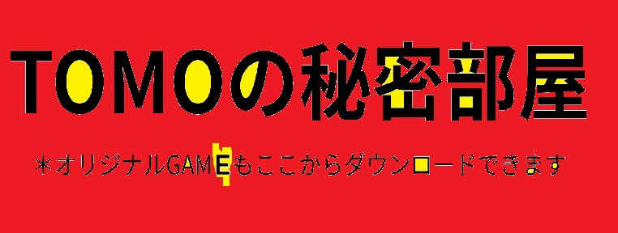

このページは loading, TOMOch の公式ページです！
オリジナルGAMEもこちらからダウンロードできます。
*ダウンロードボタンを押すとすぐダウンロードされます。ご注意ください
Ver 1.0.2 ｚ朝-夜が追加:キーボード、マウスカメラ操作対応、地形作り直し 移動速度とカメラ操作速度修正、 ================================== 操作 コントローラー専用 左スティック or W-S-A-D 移動 右スティック or MOUSE カメラ操作 Aボタン or 〇 or O ジャンプ B or ✕ or K アイテムを掴む 今の所平原を歩いたりアイテムを掴むだけです。 ぜひ遊んでみてください！ この時はコードがわからないためAIを使用してます。 是非よかったらフォローもしてね！ ぜひ良かったら私のYouTubeチャンネルを見ていただけると嬉しいです。 ========= www.youtube.com/@TOMO-3-t2562メインch =========